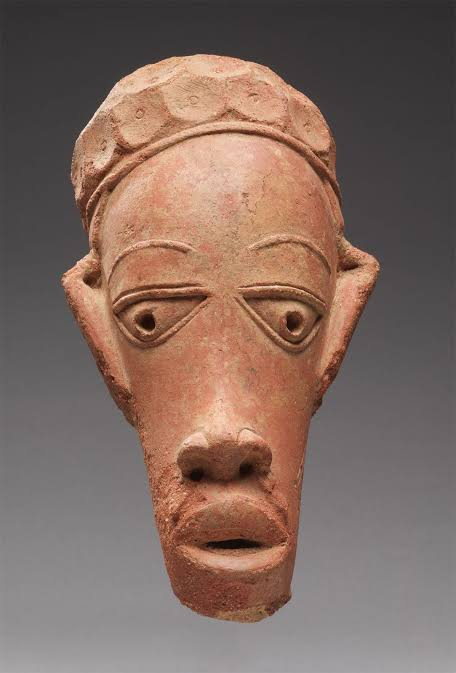
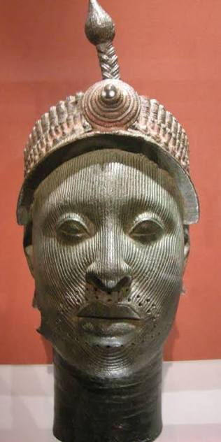
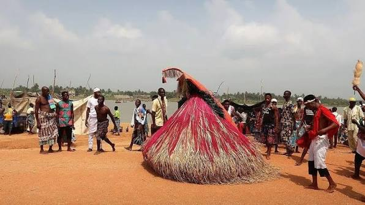

Nok Terracotta
Ancient clay sculptures dating back over 2,000 years that represent one of Africa's earliest civilizations.
Read MoreNigeria has one of Africa's richest artistic traditions. From ancient bronze sculptures and terracotta figures to modern paintings and vibrant cultural festivals, this website celebrates the creativity and heritage of Nigeria.
Explore the CollectionNigeria is home to more than 250 ethnic groups, each contributing unique artistic styles and traditions. Nigerian art reflects history, religion, identity, leadership, and everyday life. Traditional crafts, sculptures, textiles, beadwork, and contemporary paintings continue to influence artists around the world.

Ancient clay sculptures dating back over 2,000 years that represent one of Africa's earliest civilizations.
Read More
Magnificent bronze plaques and royal sculptures produced by the Benin Kingdom using advanced casting techniques.
Read More
Realistic bronze and terracotta heads that demonstrate extraordinary craftsmanship from the Yoruba civilization.
Read More
Experience colorful celebrations that preserve traditions, music, dance, and community values across Nigeria.
Read MoreExplore the stories behind Nigeria's famous artists, cultural traditions, and masterpieces.
Meet the Artists